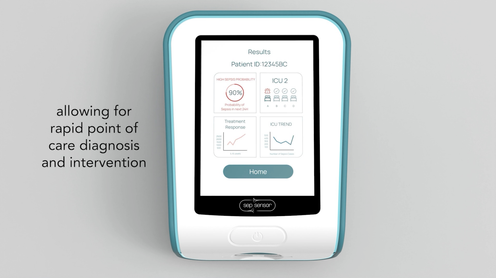

Time to result is part of the product thesis.
The platform is designed around a sub-30-minute prototype ambition because bedside placement only matters if it changes the decision window.
Prototype bedside IL-6 platform
Sepsensor is developing a prototype biosensing system that pairs a reusable reader with a disposable cartridge and ratio-based optical calibration to support near-patient inflammatory testing.

The platform is designed around a sub-30-minute prototype ambition because bedside placement only matters if it changes the decision window.
Product thesis
Sepsensor is framed as a focused bedside program: solve a clear timing problem, start with a single marker, and build a reusable system around a credible workflow.
The reader, cartridge, and interface are positioned around near-patient use rather than as a generic laboratory instrument.
A single-marker opening product makes the validation story, workflow, and partner conversation easier to understand.
The system architecture signals that Sepsensor is pursuing a scalable platform direction rather than a one-off device concept.
System design
The platform story is strongest when the hardware, assay consumable, and data output are shown as parts of the same bedside interaction.
The reader anchors the optical system and provides the interface for rapid interpretation.
The consumable layer keeps the bedside workflow tangible and operationally clear.
Self-calibrating readout is presented as core product logic, not an afterthought.


Explore the site
Each page now supports one part of the same product story so partners can understand why the technology exists, how it works, and who is building it.
The case for moving signal generation closer to the bedside.
Why IL-6 Start with one marker and a clearer product wedge.Why focus is part of the commercialization strategy.
Technology Reader, optics, cartridge, and calibration.The core technical architecture behind the prototype platform.
Progress Build, validation, and venture momentum.Where the program has already moved beyond the concept stage.
Team Assay, detection, chemistry, electronics, and guidance.The interdisciplinary team shaping the first bedside product.
Contact
For partnership, validation, or product conversations, the website keeps direct founder contact visible and easy to reach.